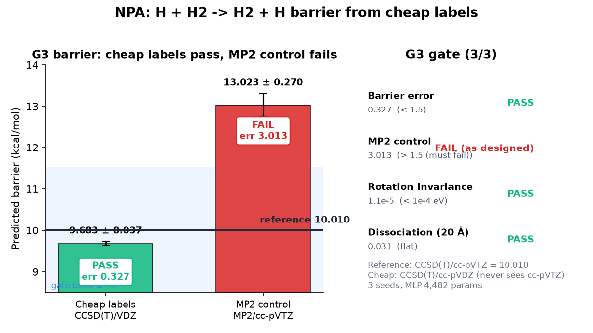
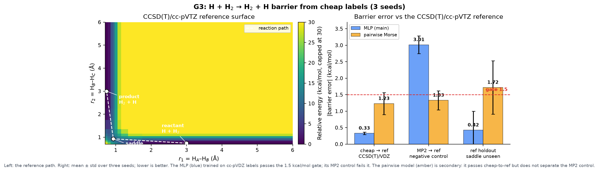
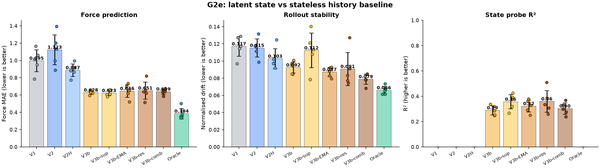
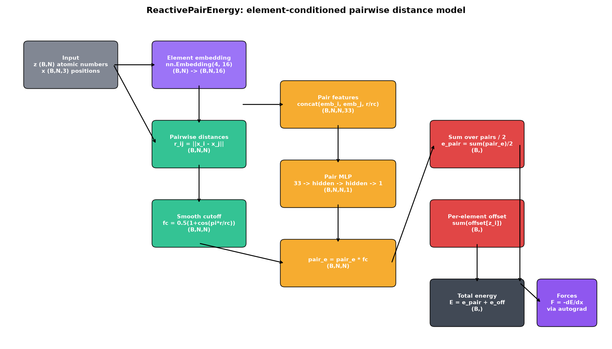
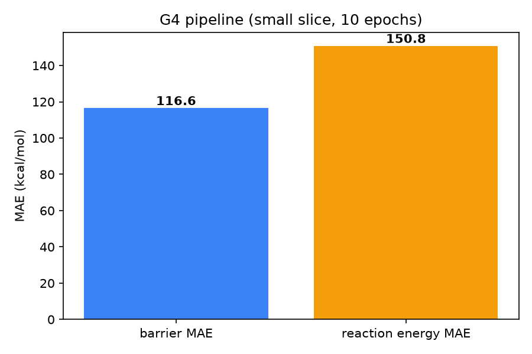
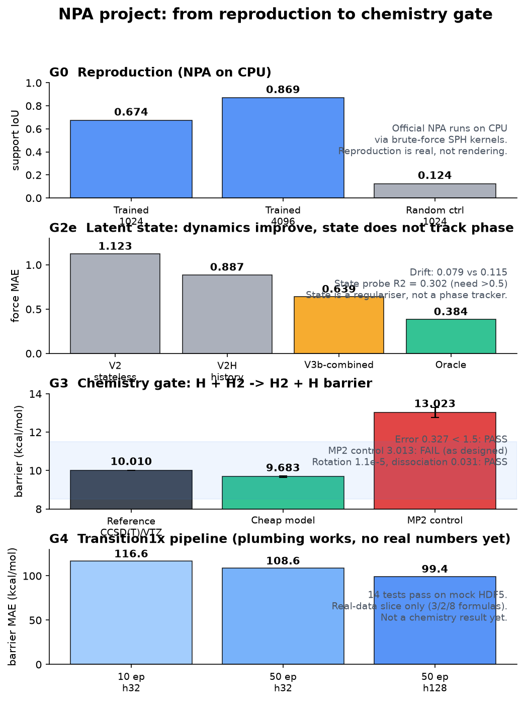

A small, honest research blog: we reproduced a neural particle automaton, tested whether latent state helps, and passed a first real-chemistry barrier gate.

The G3 gate asks whether a model trained on cheap electronic-structure labels can predict the barrier of the simplest reaction in chemistry, H + H2 → H2 + H. The reference is our own CCSD(T)/cc-pVTZ value of 10.010 kcal/mol. A distance-MLP trained on CCSD(T)/cc-pVDZ labels predicts 9.683 ± 0.037 kcal/mol, an error of 0.327 ± 0.037 against a gate of 1.5. Pass.
The same model trained on MP2/cc-pVTZ labels predicts 13.023 ± 0.270, an error of 3.013, which fails the gate as it must. That negative control is the point: the cheap level has to be the same correlated method in a smaller basis, not a cheaper method.

Left: the CCSD(T)/cc-pVTZ reference surface. Right: barrier error by condition (3 seeds).
Before chemistry we tested the core hypothesis of the project: that a persistent latent state makes dynamics better when memory is necessary. We built a world of particles with a hidden per-particle phase that evolves in time and contributes a force. A stateless model cannot see it; a model with state should infer it.
The result is mixed but honest. The combined latent arm (EMA state update plus a residual well) beat the stateless baseline on force error in all five seeds (0.639 vs 1.123) and cut rollout drift (0.079 vs 0.115). But the latent state only captures about 30% of the hidden phase (probe R² = 0.302), below the 0.5 threshold. The state hypothesis is not supported. The improvement is real and consistent, but it comes from the model class and the residual parameterisation, not from the state tracking the phase. The state is a useful regulariser, not a phase tracker.
| Arm | Force MAE | Drift | State R² |
|---|---|---|---|
| V2 stateless | 1.123 | 0.115 | — |
| V2H history | 0.887 | 0.103 | — |
| V3b-combined | 0.639 | 0.079 | 0.302 |
| Oracle (true phase) | 0.384 | 0.066 | — |

Force MAE, rollout drift, and state-probe R² by arm (5 seeds).
G3 is the first real-chemistry gate. We generated the H3 reference surface with PySCF (CCSD(T)/cc-pVTZ) and trained a small model on cheap labels. The gate is three quantitative criteria: barrier error under 1.5 kcal/mol, rotational invariance under 10-4 eV, and a flat 20 Å dissociation limit. All three pass. The cheap level must be the same correlated method in a smaller basis (CCSD(T)/cc-pVDZ, barrier 10.154); truly cheaper methods get the shape wrong (MP2 13.264, UHF 17.494, B3LYP 4.238).

The ReactivePairEnergy model: element-conditioned pairwise distances, E(3)-invariant.
G4 builds the data pipeline for Transition1x: loader, filter, split, barrier and reaction-energy helpers, an E(3)-invariant pairwise model with autograd forces, training CLI, and tests. Fourteen tests pass on a mock HDF5 that mirrors the real schema exactly. On a small real slice the model learns slowly (barrier MAE ~99–117 kcal/mol), which is expected: the atomization-energy scale is ~3000 eV and the model is tiny. The plumbing works; the chemistry numbers are not there yet.

G4 mock-slice barrier MAE (not a chemistry result).
What worked. Reproduction of the official NPA on CPU (IoU 0.674 at 1024 particles, 0.869 at 4096). A first real-chemistry barrier gate passes with a 0.327 kcal/mol error and a working negative control. The Transition1x pipeline is built and tested.
What did not. The latent-state hypothesis: dynamics improve, but the state does not encode the hidden phase (R² 0.302 < 0.5). G4 has no meaningful chemistry numbers yet. The G3 result is one reaction with three atoms, not a general potential.
Bottom line. The project cleared its reproduction gate and its first chemistry gate, and honestly failed its state hypothesis. That is a real, bounded result, not a demo.
